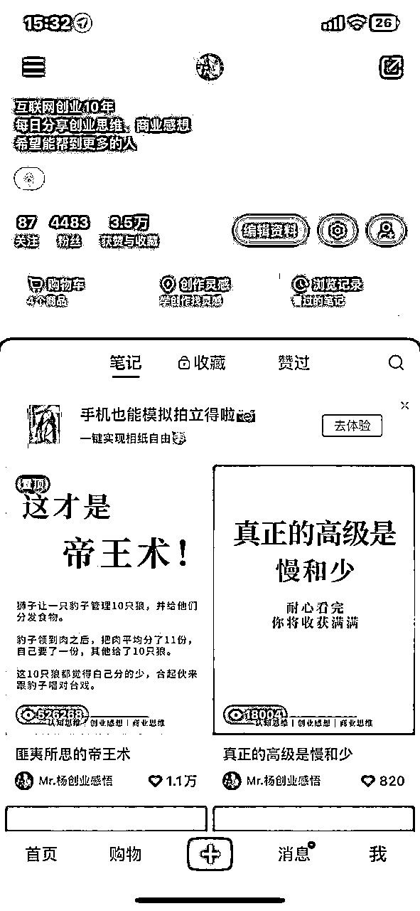
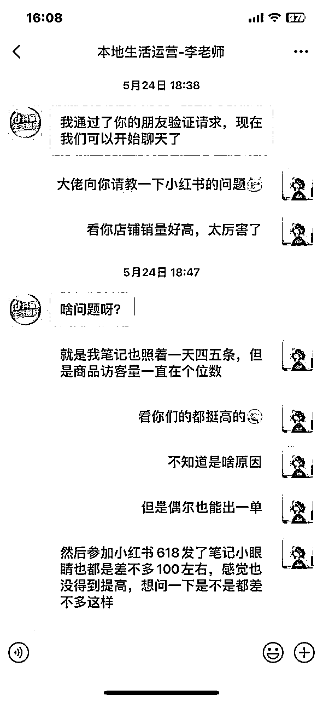
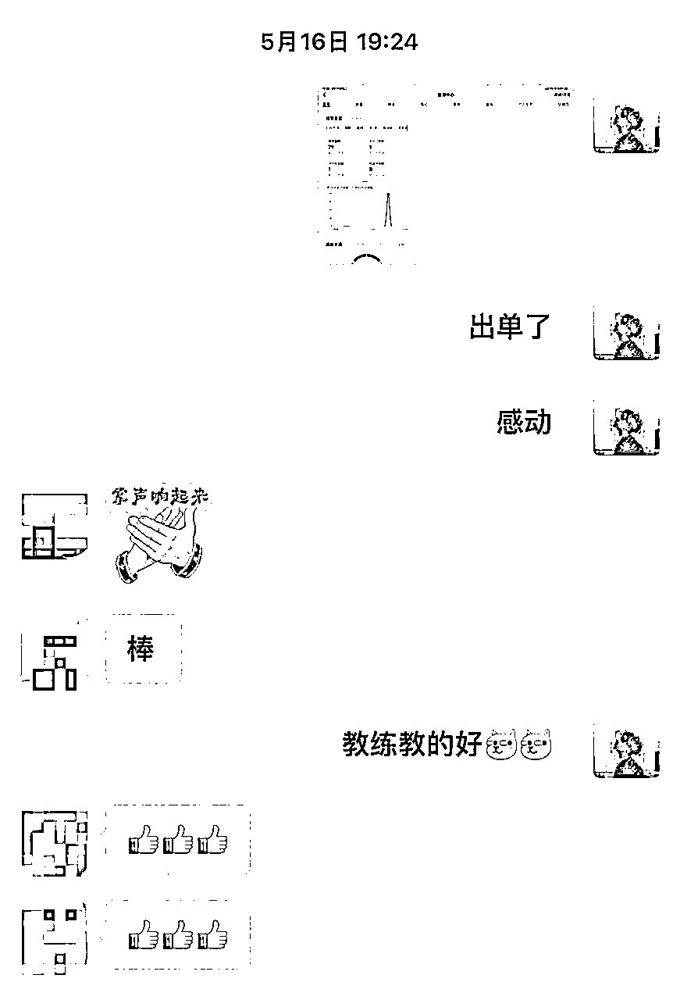
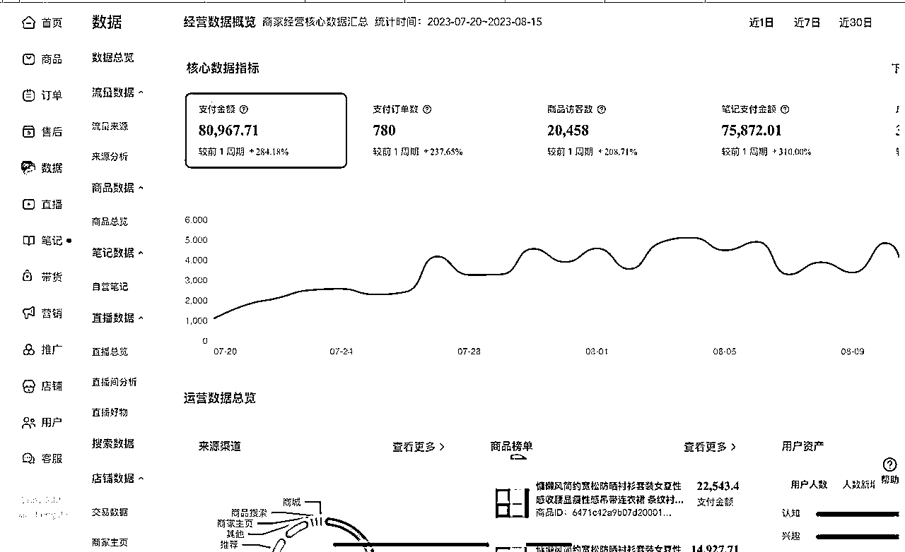
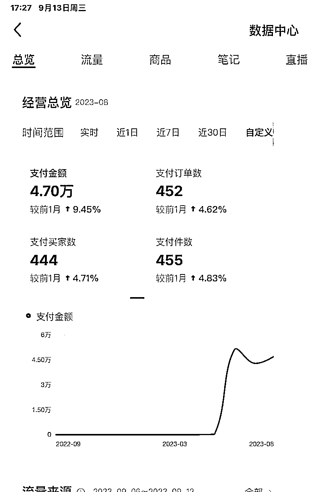
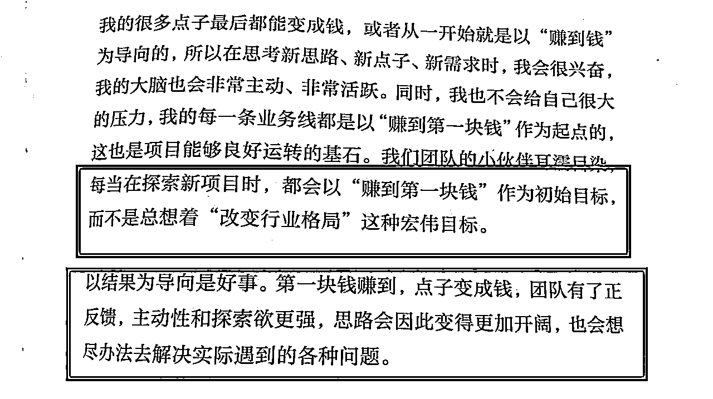

来源：https://b0mbxbbhstw.feishu.cn/docx/L1sQdPAANoDtcZxuEWDcJdx4nNP
大家好，我是秋风，00后大四学生，坐标福州，目前创业半年多，刚加入生财的圈友。
和大多数圈友一样，曾经是个小白，经历过学生时代，在不同的阶段遇到过各种的问题，做了很多项目看到别人起飞，自己却没有取到过结果，感到迷茫不知所措，如果你现在也是这样的话，可以看看我的经历，分享一下近段时间的思考，希望对大家有所帮助。
回顾过去，内心既感慨又平静。生命中发生的每件事情，都在不同程度上教会了我成长。
创业半年多，遇到了很多困难，非常感谢贵人们，一路上有他们的帮助，才有了我的今天，跟对人，做对事，减少了很多试错成本，也在路上少走了很多弯路。
这半年我感谢的第一位圈友是@康乐，因为康哥我了解到了这么多互联网项目。
也是因为康哥进入到了互联网上的圈子，认识了很多互联网道路的朋友，得到了很多资源，也是因此开始了我互联网之路。
然后我要感谢的一位好哥哥就是@行一，很早就加了行一哥，每天就看着他的朋友圈成长，认知也是因此提升了。
生财有术就是因为行一进入的，也就知道了亦仁大大，知道了有一个这么好的社群，认识了好多好朋友。
首先我说明一下我为什么写这篇文章，写这篇文章有几个原因：
一是感谢在创业道路上给予我帮助的贵人
二是希望我的经历能帮助到更多刚进入到互联网的小白或者是正在创业的朋友，帮助他们在互联网项目上赚到第一桶金
三是算是记录自己成长的经历，让自己能在此道路上渐行渐远，砥砺前行
接下来我将分享一下自己互联网的经历，以及过后的复盘思考，具体从以下几个方面阐述：
一、互联网创业前的经历
二、初试项目，踩坑总结
三、再战项目，柳暗花明又一村
四、目前的收获
五、未来的发展与思考
六、给刚入生财的小白一些建议
七、尾言碎碎念
这应该算是我大学以来最辉煌的时刻，虽然但是，也就仅此一次哈哈。
在创业之前，带着初生牛犊不怕虎的勇气，我去参加学校新生代表的选拔，凭借着还不错的演讲能力，我被选上了，在6000多人的开学典礼上发表演讲，这也让我收获了上大学的第一份自信。
懵懵懂懂，大一上学期很快就过去了。我参加了很多活动，虽然看起来很充实，但好像并没有得到实质性的提高，不知道大家以前有没有这种感觉。
我觉得这样下去不行，我得想办法改变！
有礼貌，厚脸皮，问对人，是少走弯路的有效途径。
咨询了很多优秀的前辈后，我决定以进入职场为导向，提前锻炼一些职场上需要的硬实力和软实力。
比如专业知识，演讲能力，英语能力，各种职场技能等，因为提高这些能力至少会对我以后找工作有帮助，努力不白费。
就这样，从大一下学期开始，我努力压缩成长期，打印了各种学习资料，看了n个演讲视频，几乎能利用上的时间都被我利用上了。
比如说，你在路上看到我自言自语，不用害怕，我很正常，我在抓紧时间练英语，因为觉得学好英语，可能会给我的未来带来更大的可能性，事实证明的确是这样。
这期间也会有一些学不下去的时候，比如计划被打乱，各种事情干扰，或者一下子没看到进步，感觉浮躁。反正，乱了就调整，累了就休息，一下下心情再出发。
为了提前感受职场，也不让简历一片空白，我还找了远程实习。
大二的时候，我成为了新东方优秀实习生并且拿到了奖状，也接了一些公司的业务推广，业绩都很好。
我建议，大学生越早做简历越好。
即使你没多少经历可以写，也要尝试去写一份，这样更容易发现自己还有哪方面不足，然后多渠道找机会丰富你的简历，不要什么都等到大三大四再急急忙忙的。
就这样，我在大学一年半的时间里取得挺好的成就，也学会了挺多方面的知识，同时收获了不少学弟学妹，也通过兼职，校园项目，以及企业的业务推广，赚到了属于自己的一笔小钱。
好景不长，赚到快钱后，变得有点飘，人生就像过山车，有起伏有低谷，在大二下的期间，由于搬到新宿舍，接触到了不同的人，我渐渐成为了一个颓废少年。
白天沉迷于网络游戏，晚上就和舍友出去喝酒喝到很晚，渐渐地越来越颓废，身边的朋友也因此而离去，校园业务也因此辞退，时间也这样很快过去。
因此我给各位不管小白也好还是取得一点成就的人一点建议，做事要脚踏实地,行稳致远,进而有为。
那段期间过后，人生也迎来了第一个转折点，渐渐地我有点迷茫了,也想明白一个问题，我要在这里呆4年，交4年的学费。
要是一直这样颓废下去，毕业后可能我还是什么都不会，等于浪费了4年的青春，那我在这里的意义是什么？
因为学的专业是比较偏的，不知道毕业后要干嘛，看到身边的朋友取得各种成就，赚到了钱，从而激发了自己的赚钱欲望，也下定决心开始自己的创业之旅。
也很多人一样，刚开始的时候，我跟个小白一样，疯狂给自己大脑输入知识。
百度抖音公众号上搜索很多关于创业的故事，创业的知识，每天疯狂输入，做笔记，还关注了很多博主，想要提高认知，每天晚上准时蹲点观看直播。
但是感觉讲的很泛，项目太多，什么都想搞，导致最后啥也没干成，做事坚持不下来，没看到结果就放弃了。
因此我给各位刚做项目的新手一些建议，前期做项目挑一个主要做就可以了，要有盲目乐观的心态，做一件事就算失败了也要继续学习下去，保持乐观，深耕下去，这样才能够看到成功。
大多数人都是因为一次失败了就默认失败了，而少数则会认为成功不远而继续坚持。
就如在沙漠中前行，少数人会认为绿洲出现在不远处而继续前行，到了后发现没有出现，而再次认为在不远处，如此反复，保持乐观，最后在不知道几次后出现了。
在2023年3月，我也加入了第一个互联网圈子，认识了康哥这个大boss，在社群里认识了很多优秀的人。
期间也向他们学习了不少，了解到了很多新的互联网项目，开拓了自己的眼界，我再次知道了圈子的重要性。
然后在短短的两个多月通过圈友的推荐，我也了解到了狗哥的社群，关注了狗哥公众号，还记得第一天就把狗哥的文章都浏览了一遍。
感觉这不就是现在的自己嘛，那天也过得很充实，感觉收获了很多，然后也渐渐有了创业的萌芽。
在这短短的几年我得到了一个结论，在人生重要时期的选择上，理性一定是前提，不能冲动，不能盲目，要对自己负责，对关心你的人负责，加入一个好圈子可以为自己节省很多时间成本。
如果你目标清晰，知道自己想要什么，也清楚目前自己处在什么样的位置，对未来也有把握，那么就鼓起勇气去做你想做的事情吧。
这算是我创业做的第一个项目，接触到这个项目是因为学校有学长从大一就开始组建团队开始回收美妆数码产品等，然后通过学校里的人从其他平台下单回收，最后出给档口赚差价。
当时每周可以靠撸货赚个小一千，然后觉得上学期间赚赚钱还挺香，后来发现号黑了，没那么容易下单，然后就开始模仿学长组建自己的撸货群，通过校园墙引流，组建了自己的团队，做到了两百多人的群。
期间感觉躺赚的日子来了，我每天只要负责引流，其他事情都交给团队来，这不是躺着赚钱嘛。
后来好景不长，出现了种种问题，也宣告这是个项目到此结束，我总结了以下三点：
1.学生大多没啥钱，基本都要垫付，流水过大，资金不足。
2.平台打压，冷却期过长，一个号一个月基本只能下一次，不利于长期发展。
3.精力不足，平时课程较多，没那么多时间搞这些项目以及一些其他原因，导致结束了。
经过几天的复盘，我总结了以下经验：
1.做项目时尽量选择一些长期发展的项目
2.目标群体很重要，做项目时要提前选好群体
3.这是一位对我帮助很大的姐姐告诉我的，一定要去做高利润的项目，高利润的方式，而不要去做流水很大的
这算是我第一次接触互联网的项目，当时听身边的人都在说私域的重要性，就开始了引流之路也是靠自己摸索出来的，做了半个多月，四千多粉丝，变现了不到一千。
当时做这个项目是因为看到小红书，抖音上有很多人在做商业思维，成长思维的图文内容，我看着门槛低，操作简单，就跟着入场。
小红书和抖音真的是个好平台，我记得我发的第一个作品就爆了，给我爆了一万多点赞，这也是我第一次尝到公域流量的甜头。

当时入场的时候这个项目的时候已经比较晚了，且单个账号引流数量有限，导致没能很好的做到变现。期间都是自己一个人独打独斗，啥都是自己研究，导致自己花费了很多时间。
后面变现不佳，就宣告结束了。
小红书和抖音是个好平台，当初没做好是因为认知不够，每个步骤都是自己研究出来的，浪费了太多的时间，每个坑都踩了一遍。
总结了以下原因：
1.做内容时文案都靠自己去找，浪费了太多时间，而身边的同行用的素材内容都是一样的，要是换做现在，我肯定会直接搬运过来，前期先抄后期再超。
2.当时关注了很多同行，发现绝大多数做的好的同行做着做着出现了断更的现象，但是当初认知比较低，就接着继续做了半个多月，发现转化很低，每天耗着很累，就放弃了。
对于这次经历，我的理解是：
1.一个项目刚开始做的时候有红利
门槛低的话只会越来越卷，越来越不挣钱，可以选择一个门槛较高的赛道，建立自己的护城河，同时锻炼自己的能力。
2.没有矩阵思维
当时也不知道有这种玩法，后面在圈友分享的文章中了解到这种玩法，这也让我意识到选择一个好圈子是多么的重要。
后面又做了资料号、头像号、红包封面、游戏推广等等，这些都干过，但没有一个持续到1个月。认为都是简单的事情重复做，而且难度很低，所有人能复制。因此也没有赚到多少钱。
资料号，大都是搬运别人的素材，做这样的事，资料也都不是自己原创的，我不喜欢。
头像号，我是在 Ai绘画出来前做的，那时大部分都是靠搬运内容。没有自己的护城河，我就放弃了。
红包封面，实效性很强的项目，只能做个春节，我尝试了一下就放弃了，太简单，没耐心。
游戏推广，通过录制玩游戏的界面，给游戏引流。我自己不喜欢玩游戏，没耐心去录制通关视频，没做多久就放弃了。
以上是一部分我尝试过但失败的项目，当初认为，失败不是项目本身不行，而是不适合我，就放弃了什么项目都有人赚钱，但不是所有项目都适合自己。
但是现在我想说的是：
想一上来就能找到一个我又喜欢刚好又擅长的事情，世界上没有那么好的事情。不存在，别幻想了。要是真有这种事，我也不会花时间去找项目了，早就选定这个，直接开干了。
现实是：
要么找一个感兴趣的新事情，慢慢去积累，直到擅长为止；
要么找一个你能力过关，上手快的事情，慢慢去做，从中发现乐子。
瞧不起低端的，那就花时间去啃下硬骨头，去做高端的事；
想偷点懒走轻松点的，那就拉下面子，接地气点，去做能力范围内的低端事。
人不能太贪，既要又要。想清楚自己到底要什么，然后做好取舍，这才是成功的赚钱人该有的做法。
在尝试各种项目，踩了无数坑后，身边人也不断传来嘲笑，我的初心受到了影响，那段时间，我每天都在质问自己：
“为什么我要选择创业？”
“为什么我还要坚持下去？”
“不如打一份工都有稳定收入。”
我有了放弃的年头...
不过说巧也巧，恰恰当时，小红书无货源电商这个项目热度突然高了起来，我也根据当时的认知我判断了一下，
门槛较高，可矩阵化，入场较早
正好又可以圆我做电商的梦，看到身边做电商的人觉得很牛，这不正是我想要的嘛！！
于是我也下定决心，再给自己一次证明自己的机会，无论如何我都要把这件事做好，便有了后面的故事，不然我的初次创业可能就结束了...
当时在做这个项目都说是新的风口，我想着再怎么样也要把握住，all in进去。
有了前面做项目的经验，我给自己定了个目标，半个月内完成第一单，然后我开始向一些前辈进行付费学习，也参加了很多公益培训。
看着到处都是学习干货，大佬们分享的那么多实操性强的帖子，加上自己做过那么多项目，有着一定的基础，心想着只要自己执行力强一点，不久肯定会出结果的。
就这样，每天剪剪视频，选选品，坚持了半个月，发现流量没有提高，一单也没有出。
当时心态有点崩溃，受到的打击很大，就好像拼尽全力想干成一件事，却发现那么久了连入场资格都没有，努力白费了，又有了放弃的念头...
在我想要放弃的时候，看到了群里的圈友老师分享了自己做小红书店铺的历程。
说自己做了一个多月了，也没有出一单，开了好几家店了，然后这段期间爆单了，成功都是有偶然性的，我们要做的是把这个概率放大。
然后分享起了自己做店铺的理解以及方法，那一天真的学到了很多，听了老师说了一句话：“挖一米宽，一米长，深耕一万米。”
我便下定决心想要做好这件事，不管再苦再累，也要坚持下去，都已经坚持那么久了，愿意沉下心再苦再难去沉淀去深耕。
后来，我鼓起勇气，去链接星球里同阶段做小红书店铺做的不错的圈友，真诚向他们去请教，听了贵人圈友的分享，了解到他们的故事。
我明白了创业要有好的心态，大起大落，大悲大欢都是人之常态。

有时候，拿不到结果，并不是项目本身的问题，而是在一个行业没有足够聚焦，没有足够沉淀，又或者是项目与人本身的契合性。
那一晚我悟了，调整好了心态，决定把其他事情先放一放，all in 小红书电商。
再次感谢指点我的贵人老师和圈友的鼓励，让我坚持了下去，在这条道路上取得了成果。
那时候真的很努力，在接下来的每一天，我都来到图书馆，学习选品，发布笔记，每天熬到两三点。
研究优秀同行，拆解他的账号，每个作品都看了一遍，不断换，不断学，鼓起勇气主动链接优秀学员交流，经过长时间的复盘，打造了一套属于自己的方法论，每天过的很累，但很值。
功夫不负有心人，过了五天，我出了第一单，虽然最后买家退货了，但我清楚的记得，当初出了第一单的喜悦，我连忙发群里跟圈友们报喜。
那种感觉真的很棒，这意味着完成了0-1，我的坚持和方法没有错。

过后的每一天我都按照之前的方法，每天发笔记，每天选品，这样的状态又持续了一周，迎来了我第一个转折点。
笔记迎来大爆，店铺做起来了，有了前面的经验，我马上选择放大，跑的很快，组建了自己的团队，开了三家店铺，分享自己的方法论，因为我知道利他就是利己，在此过程中有贵人的帮助，我也就将此传递了下去。
这是我做的最久的一个项目，也是我变现最多的一个项目，从今年五月份中旬开始做，做了两个多月，赚到了第一个六位数，这是我做的最久的一个项目，也是我变现最多的一个项目。


很多人说，站在风口上，猪都能飞起来
我的理解是追着风口创业的人不少，确实有些人能吃到风口红利，但最后活下来的寥寥无几，要在风口来临前做好准备，否则要是没有足够的能力，还是会掉下来的。
没有前面的踩坑，我也不会抓住这次风口，或许就早早放弃了，能在失败的项目中总结复盘，吸取教训很重要。
看了炮爷说过一句话，做事要跟对人，保持专注，付出不亚于其他人的努力，可以减少试错成本，少走弯路，可以付费，是对他人最大的认可。
过去，舍不得付费，付费后难受一晚上，换做现在，对我有帮助的贵人，有价值的社群我会毫不犹豫付费，毕竟年轻的时候投资自己最重要。
起步不久，谈不上什么收获，在我看来还有很长的道路要走，创业也才刚刚开始，还有很多要向前辈学习的地方。
主要的收获是靠小红书电商赚到了第一个六位数，打造了当时独家电商方法论，帮助一些朋友通过小红书电商赚到钱，接下来也会继续深耕。
交到了一批信任自己的朋友，可以知无不言，言无不尽。
还有最重要的是掌握了做项目的一些底层逻辑，认知得到了提高，在往后做项目时可以少走点弯路。
未来主要会从流量方面，以及私域运营，打造好个人ip。
都说流量为王，接下来更加专注做好流量。
主要还是做好公域平台，从公域平台引流，矩阵化，不懂得搞流量的话，产品再好也不会被看见，之前就吃过这样的亏，打造好内容，产品再好，没人看也不会有人转化。
在我看来，任何商业都具有周期性，更何况是在潮流变化日新月异，营销玩法一天变一个的互联网行业。
而私域更像是个人财产，符合长期主义，因此会做到良好的私域运营，基于社交关系，持续产出优质的内容。
对于个人IP，刚开始我认为像是普通博主一样，拥有很多粉丝，然后让更多人关注你。
但是听很多好哥哥的讲解，我知道了，个人IP的关注点不同，更加有可信立体的人设，更大的号召力，且有更丰富的人设，可以通过各个渠道传递他的成长故事、价值观、工作和生活，这不就是我想要的嘛！
看到了拱卒哥，行一老师，理白老师等等等的IP形象，一加到好友，我也不怕被人笑话，就把朋友圈翻了个遍，认为人设感真的好强，很有付费的冲动。
还有就是我清楚的记得行一拉了个群，很快就四百多人了，我第一次感觉到这么强大的号召力，再次加大了我做个人IP的想法。
我认为个人IP的生命周期更长，变现形式丰富，最主要的是个人IP是成为理想人，是一种设计生活的方式，这个过程会让你变得越来越好，又反哺到你的IP，是正反馈的过程。
分享我特别认同的一句话
一个人最强大的能力：能深耕，敢破局，懂持续
未来将会深耕小红书，具备核心竞争力，提高自己的价值，我认为能和大佬链接得要具备自身价值，让大佬觉得投资自己是有用的，才能更好的实现价值互换，让大佬“带带你”。
常常听狗哥说：要真诚，利他利己。
一个人能走多远，靠的不是眼睛，而是眼光；一个人事情能做多大，靠的不是技巧，而是格局；一个人能走多久，靠的不是忽悠，而是真诚。
后续也会更加真诚，不管向上社交，还是向下兼容，都要保持真诚，为别人创建更多的价值，毕竟自己也能获得更多价值，你说对吧！
对帮助过自己的人，要多多感恩，可以发发圈表示感谢，也可以送送礼，或者发个红包，再或者付费加入社群，表达得方式很多，总之要有一颗感恩之心。
我认为付费是对帮助你的导师或者贵人最大的认可，未来也会对一些对自己有帮助的贵人朋友多付费，投资自己何乐而不为呢。
很多时候，总是不敢多多表达，怕自己说错话，担心别人不能给足反馈，所以总喜欢独来独往，然后内心不断内耗，反复循环。
直到后面参加了一场线下会，第一次参加内心也是充满恐惧，当我听到一位大佬分享自己的故事，给大家带来的能量如此之高，当即就获得了很多人的认可赞同，鼓掌声满满，我才意识到自身高能量真的会影响到周围人，这也给我思维带来了极大的转变，我下定决心要成为一个多输出的人。
在一些社群或者是看到了对自己有感触的话，能够多表达自己的见解，别人向自己请教问题时能多分享出来，知无不言。
我认为还是得多参加生财线下见面交流会，建立强链接，认知更多同频的好友，多学习，多表达，拜访优秀的大佬，向其学习，我相信进步会很快。
线上聊天千万遍真不如线下见一面，线下见面可以快速建立信任感，大佬的分享往往是真诚无保留的，遇到问题能够及时得到大佬温暖的解答，困惑很久的事情也可以被一点就破。
真的很感谢线下组局人，每次线下聚会都能够学到很多，最主要还是能够遇到很多真诚的朋友，关系建立的会更快，平时也能够多多联系。
一些刚做互联网项目的圈友一开始可能会选择一些门槛高的，然后做的时候很辛苦，不容易做成。
我建议可以先从门槛低的，操作简单的入手，先跑通0-1，锻炼一下自己的能力，然后在慢慢开始挑战有一定门槛的项目，慢慢积攒自己的势能，这样以后做一些难一点的项目会轻松些。
做项目可以选择一些可以矩阵化的项目，批量复制，能够放大的项目就是一个好项目。
在做项目的同时不忘私域的积累，将公域流量导到私域，私域更像是个人财产，符合长期主义，一点点积累客户，从而变现。
刚开始加入生财，一下子感觉信息量很大，什么都想看，什么都想学，看的眼花缭乱项目不停换，看一个试一个，最后导致的是什么都没学到，钱也没赚到，时间也没了。
所以我建议把生财当成词典，遇到困难，做项目时遇到问题时，用生财的精华索引工具找到相似的文章，选择性浏览自己需要的，然后进行学习，并链接圈友。
多参加航海，多进行实操，文章看千万遍，不如亲自实践一遍。从实践中不断总结，链接高手，积累点做项目的经验，会对后续接触新的项目更加游刃有余。
在链接圈友时可以主动发个红包，表达自己的心意，从而满足自己需求。
在做项目的时候，常常会感觉到浮躁，一开始就想着赚大钱，这样的心态很难成功的。
正确的做法是先从赚1快钱开始，跑通0-1然后慢慢放大矩阵化，从而破十破百，在做项目的时候经常会因为没有正反馈而感到焦虑，然后觉得自己不行，慢慢的放弃。
可以有物质或者是理想驱动着自己，让自己执行力变强，有足够高的赚钱欲望，积小胜成大胜，从而做到0-1。借用一下前几天看书看到@亦仁大大的一句话。

温故而知新，我认为不管是做啥，复盘都是必不可少的环节之一。
懂得在项目中总结，真的很重要，可以在做项目的同时快速进步，之前刚开始接触互联网项目的时候，同一个问题犯了很多次，浪费了好多时间，要是每天能够复盘总结的话，我相信可以节省不少的时间。
现在的我基本每天都复盘，睡前留二十分钟静下心，想想今天学到了什么，有哪些不足，以及明天需要做些什么。短短的二十分钟却可以带来很多好处，慢慢的成长进步。
回想这半年多的心酸历程，真的是有点写哭了，这半年是自己成长最迅速的半年，破0到1，尝试了很多之前不敢做的事情，但还是有很多不足，人生总是得不断尝试的嘛，不断挑战，接下来还会继续向上成长，向上突破，帮助更多的人。
在这坎坎坷坷的互联网创业道路上，期间遇到很多困难，有挫折，有焦虑，有压力，有烦恼，但这些在我看来都不算大风大浪，毕竟才刚开始，还有很多需要面对的，再次感谢@帮助我的贵人们，感谢@生财有术。
希望我的经历对大家有所帮助，也算是记录自己成长的过程，让我们一起提高认识，破圈层，一起生财有术！！